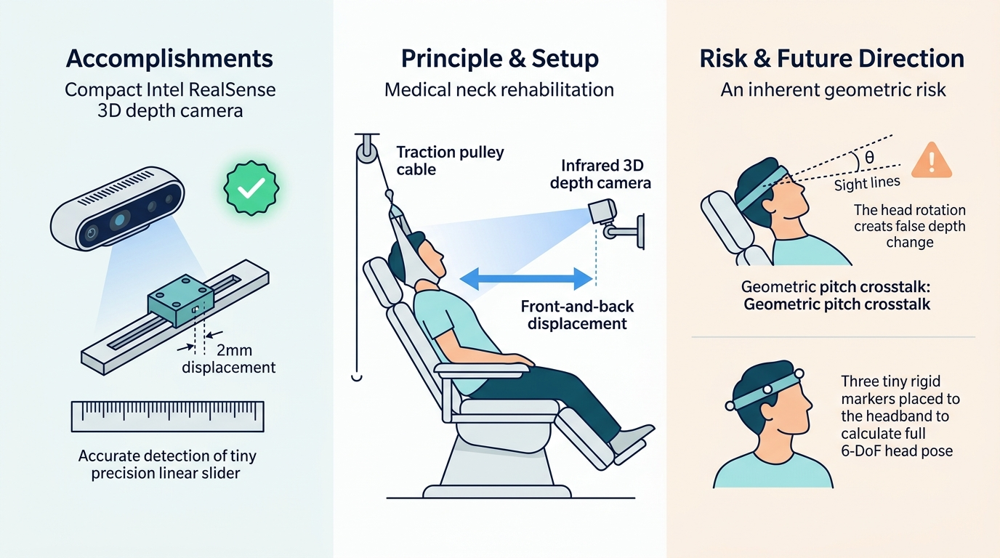

D435i 深度实测通过 2mm 精度判据
✅ 满足 2~5mm 要求，理论极限可达 0.2mm
医疗颈部康复牵引多模态视觉监测
⚠️ 头部仰角几何风险与姿态解耦
头部微仰角度 θ 导致距离变大
10° 仰角产生 3.39mm 虚假位移
(超判据 170%，非噪声无法平均)
核心隐患：俯仰角 θ 几何非线性串扰
Z_测得 = Z_真实 / cos(θ) ，必须进行角度解耦
后续方向：头戴 3 个刚体标记点
利用空间多点解算 6 自由度刚体位姿，彻底分离纯 Y 轴拉伸与 Z 轴位移，消除仰角伪位移。